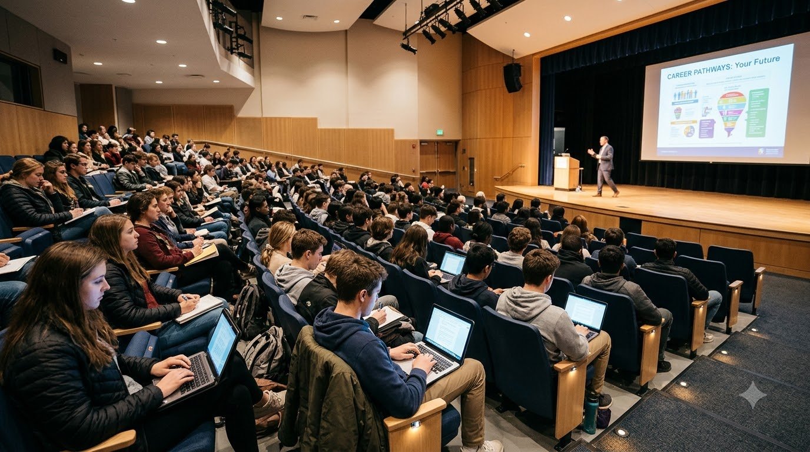

Personalized Guidance for Every Junction.
From selecting your Class 10 stream to planning a mid-career transition, our sessions provide the research-backed clarity you need to move forward with certainty.
Services for School Students
Class 9 and 10 are crucial years for building subject curiosity and avoiding premature academic pigeonholing. We focus on low-stress self-discovery and holistic stream evaluation.
- Career Awareness: Introduction to modern industries beyond standard doctor/engineer paradigms
- Stream Selection After Class 10: Objective evaluation of Science, Commerce, and Humanities
- Subject Combination Guidance: Choosing electives (Mathematics, Applied Tech, Fine Arts) that keep options open
- Exploring Career Interests: Interactive exploration of problem types and natural affinities
- Academic Pathway Mapping: Understanding 5-to-7-year educational roadmaps
Services for Class 11–12 Students
Higher secondary education is dense with intense academic schedules and competitive exam pressures. We help students balance board preparation with strategic university selection.
- In-depth Career Exploration: Deep dives into specific professional domains
- Course Selection Guidance: Comparing B.Tech, B.Sc., B.Des, BA LLB, B.Com, and multidisciplinary degrees
- Degree Pathway Planning: Examining integrated 5-year vs. undergraduate-plus-master's tracks
- Entrance Examination Awareness: Clarifying eligibility, exam patterns, and realistic timelines
- College Selection Criteria: Evaluating pedagogy, faculty mentorship, location, and campus facilities
Navigating Beyond Binary Choices
Medicine, Architecture, Law, Chartered Accountancy requiring specific licenses and statutory examinations.
Computer Science, Data Analytics, Bioengineering, and Interaction Design anchored in portfolio capabilities.
Economics, Mathematics, Psychology, and Media providing broad analytical agility for higher specializations.
Services for College Students
A university degree is what you make of it. We assist undergraduate students in converting theoretical knowledge into high-demand industry capabilities and clear career trajectories.
- Specialization & Elective Alignment: Selecting minors that reinforce target industries
- Skills & Career Alignment: Identifying capability gaps between textbook syllabus and workplace demands
- Internship & Project Strategy: Positioning research papers, open-source code, or design case studies
- Higher Education Exploration: Evaluating MS, M.Tech, MBA, and doctoral programs
- First-Job Preparation: Crafting concise professional profiles and technical narrative skills
Services for Graduates
Graduation marks the transition from structured academic classrooms to the open-ended professional world. We help recent graduates find steady footing and navigate early career milestones.
- Career Direction Assessment: Identifying optimal entry sectors based on degree background
- Professional Skills Mapping: Auditing demonstrable projects against live job listings
- Further Education Evaluation: Deciding whether to work immediately or pursue immediate Master's studies
- Job Search Architecture: Navigating professional networks, applications, and direct outreach
- Interview & Presentation Coaching: Framing projects and problem-solving methodologies effectively
Working Professional Guidance
Feeling plateaued, unfulfilled, or eager to pivot into high-velocity sectors? We provide discreet, strategic guidance to help experienced professionals make calculated career transitions.
- Career Transition Exploration: Evaluating risk-adjusted paths into new industries
- Career Progression & Leadership: Positioning for senior cross-functional management
- Upskilling & Reskilling Strategies: Prioritizing technical or business credentials with high ROI
- Executive Higher Education: Assessing Executive MBAs, global fellowships, and specialized certifications
- Transferable Capability Audits: Reframing existing achievements to match target sectors
Parent Counselling & Consultation
Collaborative sessions designed to help parents build open, supportive dialogue with their children about modern educational realities.
Institutional Services for Schools & Colleges
Partnering with educational institutions to empower cohorts of students with modern career literacy and holistic guidance workshops.
School Career Awareness Workshops
Interactive cohort sessions introducing Classes 8–10 to multidisciplinary industry futures, deconstructing stream myths, and promoting cognitive curiosity.
College Career Guidance Sessions
Equipping undergraduate cohorts with portfolio building frameworks, internship strategy, technical interview readiness, and higher education navigation.
Student Development Labs
Hands-on exploratory workshops on systems thinking, resume architecture, personal positioning, and transferable skills.
Parent Awareness Seminars
Institutional parent nights fostering empathetic family career conversations and demystifying national entrance frameworks.

Every Great Journey Starts With A Guided Conversation.
Whether you are exploring high school streams or advancing your executive trajectory, we're here to help you navigate with confidence.
Enquire for Session Details